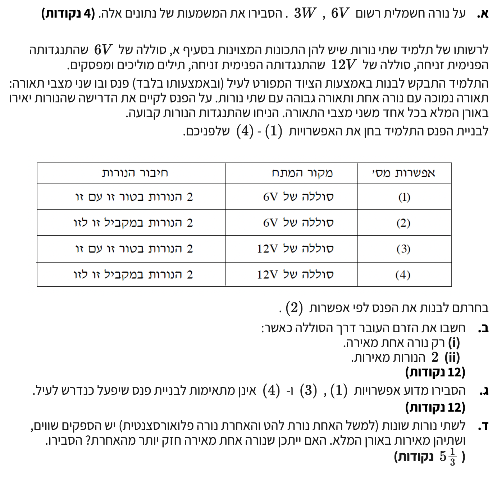

פתרון מלא, מודרך ופדגוגי לשאלה 2 מתוך בחינת הבגרות בפיזיקה
השאלה עוסקת במעגלי זרם ישר המכילים נורות להט, סוללות ומפסקים. בשאלה זו נחקור כיצד חיבורים שונים (טור לעומת מקביל) ושימוש במקורות מתח שונים משפיעים על פעולת הנורות ועל תפוקת האור שלהן.
נלמד כיצד לעבוד עם נתוני העבודה של נורה ("ערכים נומינליים") וכיצד לנתח את חלוקת המתחים והזרמים במעגל.

העיקרון הפיזיקלי המרכזי כאן קשור להספק חשמלי ולתנאי פעולה תקינים. ההספק מתאר את קצב המרת האנרגיה מתוך הנוסחה המופיעה בדף הנוסחאות: \( P = IV_{AB} \). ערכים המוטבעים על מכשיר נקראים "ערכים נומינליים" ומציינים את תנאי העבודה האופטימליים שעבורם המכשיר תוכנן מראש.
הערכים הללו מתארים את תנאי הפעולה הנורמליים שבהם תפיק הנורה את אורָה המלא והתקין ללא חשש לשריפתה:
תשובה סופית: הרישום "6V" מציין את מתח העבודה התקין שעבורו תוכננה הנורה כדי להאיר במלואה, והרישום "3W" מציין את ההספק החשמלי (קצב צריכת האנרגיה) של הנורה כאשר היא מחוברת למתח של שישה וולט.
בתור שלב מקדים המשותף לכל המקרים, נמצא את התנגדות הנורה הקבועה (בהנחה שאינה תלויה בטמפרטורה). נחלץ את הזרם דרך הנורה כאשר היא עובדת בצורה אופטימלית: \(I = \frac{P}{V} = \frac{3}{6} = 0.5\text{ A}\). מתוך חוק אוהם, ההתנגדות של כל נורה תהיה \(R = \frac{V}{I} = \frac{6}{0.5} = 12\text{ }\Omega\). כעת נבחן כל מקרה בנפרד תוך הצגת תרשים זרימה של הזרמים.
במקרה (i) שבו רק נורה אחת מאירה, הענף של הנורה השנייה מנותק לגמרי בגלל המפסק הפתוח. לפיכך, הנורה היחידה שפועלת מחוברת ישירות להדקי המקור והמתח הנופל עליה הוא מתח הסוללה המלא השווה ל-\(6\text{ V}\). הזרם העובר דרך הסוללה זהה לזרם העובר דרך הנורה ולכן נחשב אותו בעזרת חוק אוהם ונקבל \(I = \frac{V}{R} = \frac{6}{12} = 0.5\text{ A}\).
במקרה (ii) שבו שתי הנורות מאירות במקביל, המתח החשמלי על כל אחד משני ענפי המעגל זהה ומוסיף להיות בדיוק מתח הסוללה שהוא \(6\text{ V}\). מכיוון שהמתח וההתנגדות של כל נורה זהים למקרה הקודם, גם הזרם העובר בכל נורה נשאר \(0.5\text{ A}\).
בהסתמך על חוק צומת הזרמים, הזרם הכללי היוצא מהסוללה מתפצל באופן שווה לשני ענפי הנורות ולכן הזרם הכולל דרך הסוללה הוא סכום הזרמים שלהן, כך שנקבל \(I_{\text{total}} = 0.5 + 0.5 = 1\text{ A}\). לחלופין, ניתן היה למצוא את ההתנגדות השקולה של המעגל המקבילי שהיא \(\frac{1}{R_p} = \frac{1}{12} + \frac{1}{12} = \frac{2}{12}\) ומכאן ש-\(R_p = 6\text{ }\Omega\), ואז להציב בחוק אוהם הכולל ולקבל את הזרם הכולל \(I = \frac{6}{6} = 1\text{ A}\).
תשובה סופית: (i) כאשר נורה אחת מאירה, הזרם העובר דרך הסוללה הוא \(0.5\text{ A}\). (ii) כאשר שתי הנורות מאירות במקביל, הזרם העובר דרך הסוללה הוא \(1\text{ A}\).
העיקרון הפיזיקלי המרכזי כאן קובע שכדי שנורה תאיר בצורה אופטימלית ובאורה המלא, חייב ליפול עליה מתח השווה למתח העבודה הנומינלי שלה שהוא \(V = 6\text{ V}\). אנו נשתמש בחוקי קירכהוף (חוק הלולאות האומר כי סכום מפל המתחים על הנגדים שווה לכא"מ המקור: \(\sum \varepsilon - \sum IR = 0\)). מכיוון שהנורות זהות (בעלות התנגדות זהה), על פי חוק אוהם (\(V=IR\)) מפל המתח עליהן יהיה זהה, ולכן מתח המקור מתחלק שווה בשווה בין הרכיבים הטוריים (\(V_1 = V_2 = \frac{V_{\text{total}}}{2}\)). לעומת זאת, במעגל מקבילי המתח הנופל על כל ענף שווה בדיוק למתח המקור. בואו נבחן בקפידה כל אחת מהאפשרויות ונפסול אותן אחת לאחת על בסיס עקרונות אלו:
במצב שבו שתי הנורות מחוברות בטור למקור מתח של \(6\text{ V}\), מתח המקור מתחלק באופן שווה בין שתי הנורות הזהות (שהתנגדותן היא \(12\text{ }\Omega\)). כתוצאה מכך, המתח שנופל על כל נורה הוא מחצית ממתח המקור בלבד, כלומר \(V_{\text{bulb}} = \frac{6}{2} = 3\text{ V}\). מתח של שלושה וולט נמוך משמעותית ממתח העבודה הדרוש של שישה וולט, ולכן ההספק שהנורות יפיקו יהיה קטן בהרבה מההספק הנומינלי של שלושה וואט (למעשה \(0.75\text{ W}\) בלבד), והנורות יאירו באור חלש ועמום מאוד, מה שפוסל את האפשרות לחלוטין.
באפשרות זו שתי הנורות מחוברות בטור. במעגל טורי ישנו מסלול זרימה אחד בלבד עבור הזרם החשמלי. המשמעות היא שלא ניתן להאיר רק נורה אחת: אם נפתח מפסק כדי לכבות נורה אחת, ננתק את המעגל כולו, והזרם ייפסק לחלוטין. במצב זה, שתי הנורות יכבו יחד (במעגל טורי או ששתיהן מאירות יחד, או שאף אחת לא מאירה). לכן, אפשרות זו כלל לא עומדת בדרישה הבסיסית של הפנס לאפשר מצב "תאורה נמוכה" שבו רק נורה אחת פועלת.
באפשרות זו המקור הוא בעל מתח של \(12\text{ V}\) והנורות מחוברות אליו במקביל. כפי שלמדנו מתוך עקרונות המעגל המקבילי, המתח על כל רכיב או ענף מקביל שווה למתח המקור. המשמעות היא שבין אם נדליק נורה אחת ובין אם נדליק את שתי הנורות גם יחד, כל נורה שמופעלת תקבל מתח ישיר וקבוע של \(12\text{ V}\) על הדקיה. מאחר שמתח העבודה הנומינלי של הנורה הוא \(6\text{ V}\), חיבורה למקור של שנים עשר וולט ייצור חום חזק שיגרום לשריפת חוט הלהט של הנורה.
תשובה סופית: באפשרות (1) מתח המקור הטורי נמוך מדי ולכן כל נורה תקבל רק \(3\text{ V}\) ותאיר חלש. באפשרות (3) עקב החיבור הטורי לא ניתן להאיר רק נורה אחת, שכן פתיחת מפסק תכבה את שתיהן. באפשרות (4) בחיבור מקביל למקור של \(12\text{ V}\), כל נורה מקבלת את מלוא המתח הגבוה ללא תלות במספר הנורות הדולקות ולכן בכל מצב הנורות יישרפו.
ההסבר מסתמך על חוק שימור האנרגיה ועל הגדרת המושג נצילות חשמלית. נוסחת הנצילות כפי שניתן לגזור מן העקרונות היא \( \eta = \frac{P_{\text{eff}}}{P_{\text{in}}} \) אשר מתארת את היחס שבין ההספק המועיל שאנו מפיקים (האור הנראה במקרה של נורה) לבין ההספק החשמלי הכולל שמושקע במכשיר ונצרך מספק הכוח. שאר ההספק הופך ברובו לצורות אנרגיה שאינן מועילות כגון אנרגיית חום.
התשובה לכך היא שבהחלט ייתכן שנורה אחת תאיר חזק יותר מהשנייה, וזאת משום שההספק החשמלי הנצרך מתאר אך ורק את כמות האנרגיה החשמלית שהמכשיר שואב מרשת החשמל בכל שנייה, אך אינו מעיד במלואו על כמות האנרגיה המומרת לתוצר הרצוי שהוא האור. נורות שונות פועלות על בסיס מנגנונים טכנולוגיים בעלי יעילות פיזיקלית שונה לחלוטין שאותה אנו מכנים נצילות אנרגטית:
ולכן, עוצמת התאורה שהנורה היעילה יותר תפיק תהיה גדולה ובולטת יותר - למרות ששתי הנורות צורכות את אותו הספק מקור מהרשת בדיוק.
תשובה סופית: כן, הדבר ייתכן לחלוטין. נורות בעלות טכנולוגיות שונות מאופיינות בנצילות אנרגטית שונה. נורה בעלת נצילות גבוהה יותר ממירה אחוז גדול יותר מן ההספק החשמלי הנצרך לאור נראה מועיל, בעוד שנורה בעלת נצילות נמוכה מבזבזת יותר אנרגיה על יצירת חום הבלתי נראה לעין, ולכן הנורה היעילה יותר תאיר חזק יותר עבור אותו הספק חשמלי מדוד.